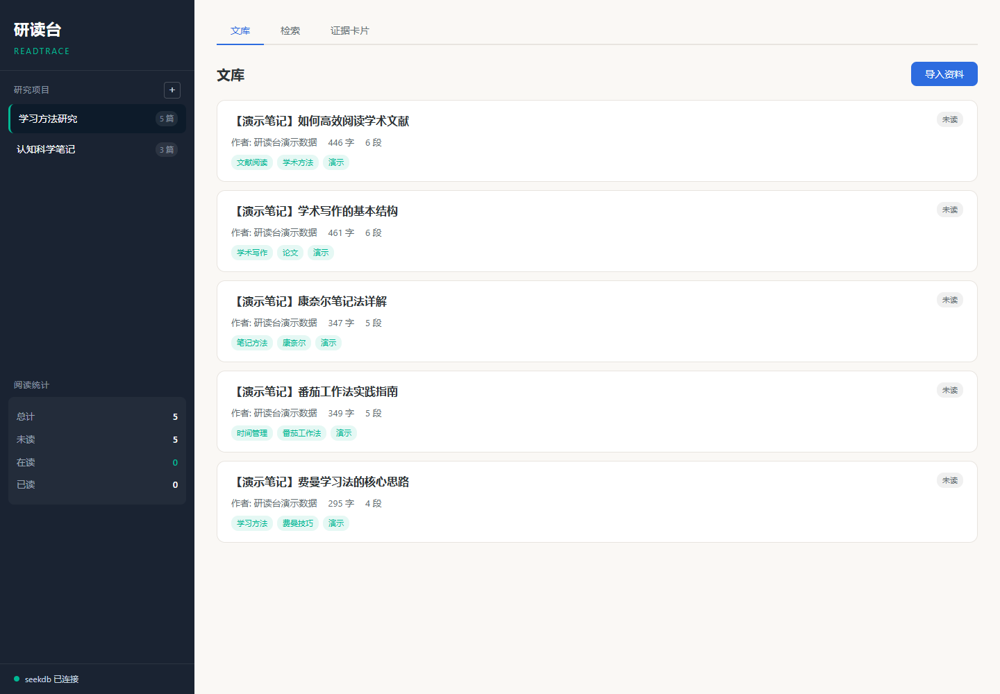
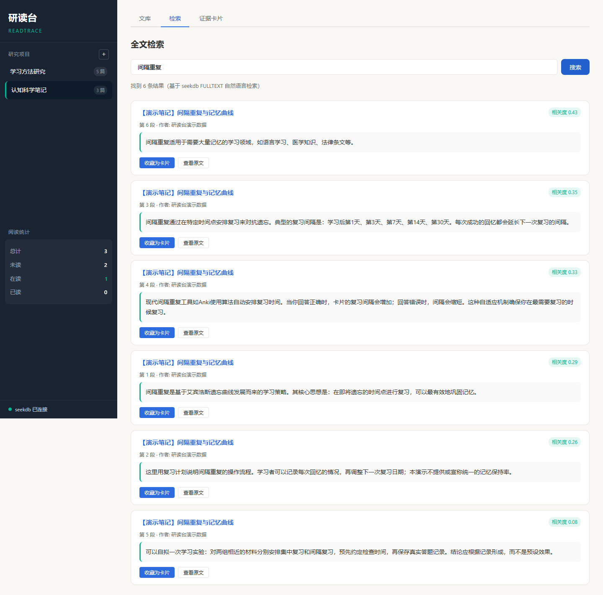
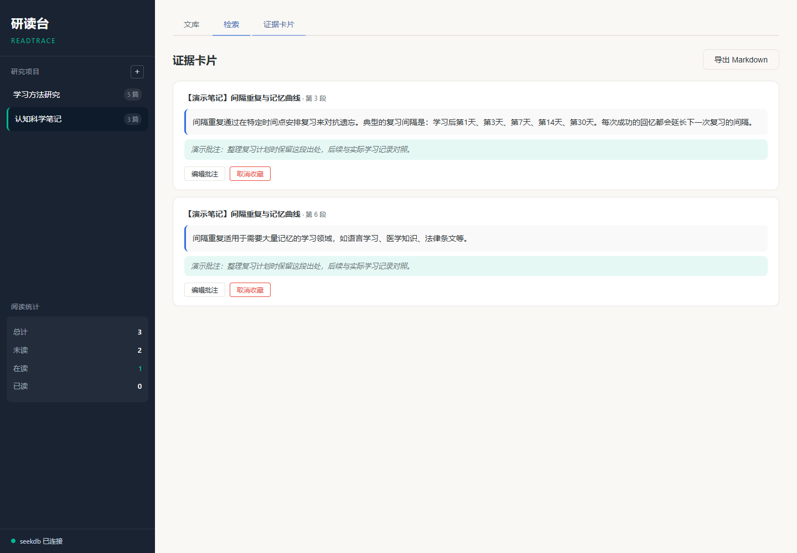
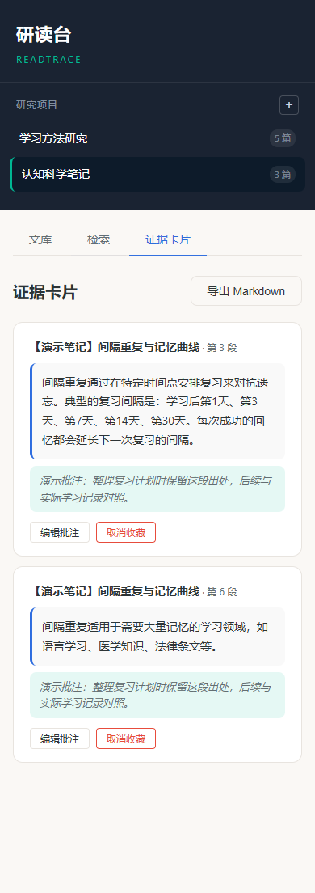

读过的论文段落模糊记得有用，但翻遍笔记也定位不到原文出处。Ctrl+F 只能搜精确匹配，无法处理同义词和语义变体。
手动复制原文到笔记后，丢失了 document_id、段落编号等出处信息。写论文时无法快速回溯引用来源。
没有阅读进度管理，不知道哪些文献已读、哪些在读。多项目并行时资料混杂，无法隔离。
研读台的方案：导入资料自动切块存入 seekdb → FULLTEXT ngram 全文检索定位原段落 → 收藏为带出处的证据卡片 → 追踪阅读进度 → 一键导出带引用的 Markdown 笔记。所有数据本地持久化，刷新不丢失。
创建和切换多个研究项目，数据完全隔离。每个项目独立的文库、检索和卡片空间。
粘贴文本或上传 .txt/.md 文件。自动按段落切块，保存段落编号和内容哈希。重复导入幂等处理。
基于 seekdb FULLTEXT 索引的真实关键字搜索。展示标题、原段落、段落编号和相关性得分。
收藏原文段落并添加批注。卡片保存 document_id/chunk_id 出处，支持 Markdown 导出。
每篇资料的未读/在读/已读状态管理。项目级统计面板。刷新和重启后数据持久化。
导出带引用的 Markdown 笔记。包含标题、原文、批注、来源和段落号。
以下截图来自主机真实运行 seekdb + 本机 uvicorn 的浏览器截图，非模拟。




seekdb 作为 OceanBase MySQL 兼容模式的分布式数据库，在本项目中同时承担持久化存储和全文检索引擎两个核心角色：
WITH PARSER ngram 分词器，支持中文全文检索UNIQUE(project_id, content_hash) + SHA-256 去重核心检索 SQL：
SELECT c.id AS chunk_id, c.document_id, c.paragraph_number, c.content,
d.title AS document_title,
MATCH(c.content) AGAINST(? IN NATURAL LANGUAGE MODE) AS relevance
FROM chunks c
JOIN documents d ON c.document_id = d.id
WHERE d.project_id = ?
AND MATCH(c.content) AGAINST(? IN NATURAL LANGUAGE MODE)
ORDER BY relevance DESC
LIMIT ?
实测验证：主机运行 scripts/integration_test.py 连接真实 seekdb 实例，41 项检查全部通过；独立 API 测试 27 项全部通过；浏览器功能验证 8 项全部通过；停止再重启 uvicorn 后文档、批注、阅读状态仍保留。
所有用户内容使用 textContent 渲染，不插入未转义 HTML。来源链接仅允许 http/https，配置 rel="noopener"。
所有 SQL 使用参数化查询。FULLTEXT 查询关键字经白名单过滤。表名列名固定标识符。
Pydantic 模型强制类型和长度约束。文件大小限制 10MB。仅允许 .txt/.md 扩展名。
仅绑定 loopback (127.0.0.1)。单人本地模式，无用户认证。不暴露数据库或本地 API 到公网。